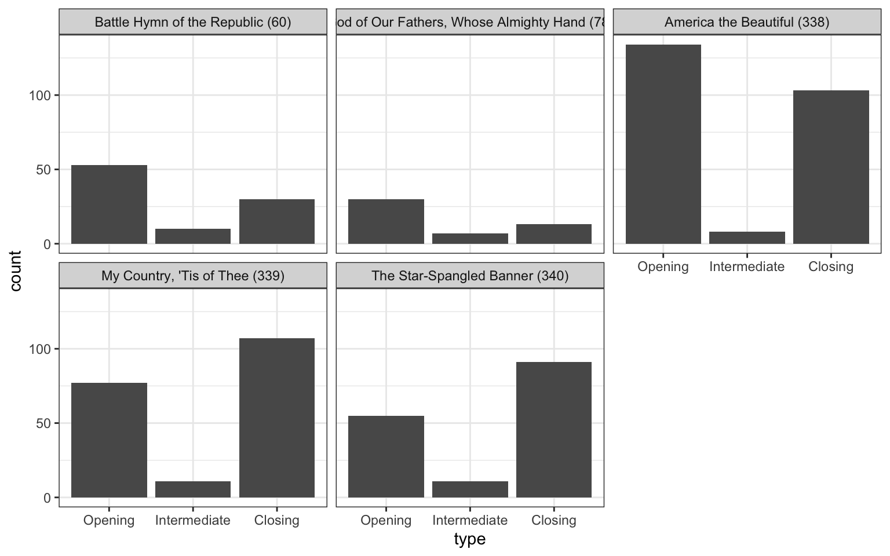
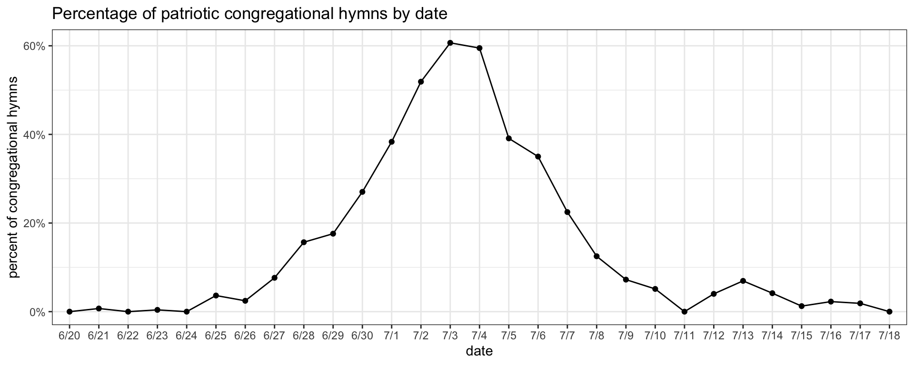
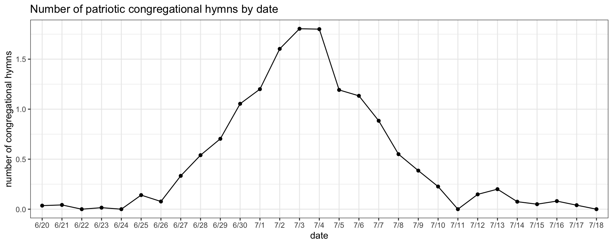
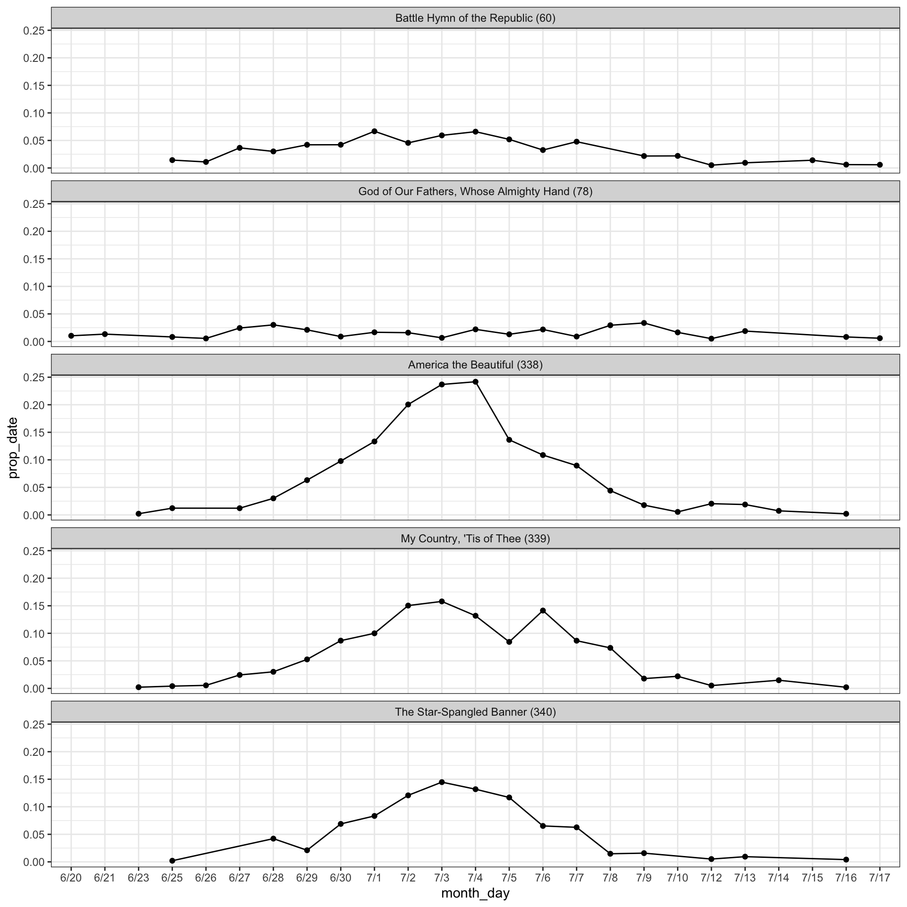

What hymns are sung around the 4th of July
holidays
frequency
Today is Independence Day in the United States. Many American congregations sing patriotic hymns to commemorate the day. Let’s take a look at some statistics and patterns around the 4th of July. This post is based on data from 817 sacrament meetings within seven days of July 4th between 2002 and 2024. They come from 310 wards in the United States.
The top 3 patriotic hymns
It is no surprise what the top three most common hymns within a week of July 4th are. Just about two-thirds of wards sing
That’s a remarkably high percentage of wards. It’s rare to see holidays with that amount of consistency. For reference less about 58% of wards sing
Technical details for nerds :)
If about 66% of wards sing 338, 53% sing 339, and 43% sing 340, then we would expect \(0.66 \times 0.53 \times 0.43 = 15\%\) of wards go for the trifecta and sing all three. We actually do not see that many. In fact, I’ve only seen that happen in just seven wards, or 0.9% of sacrament meetings around July 4th. A part of me wants to run some analysis to show that the probabilities of hymns are not independent and that conditional probability of the hymns goes down given that one or two of the others is already sung. But, I took a look at those seven meetings and saw a more practical explanation.
First, the Sunday closest to July 4th is most often a Fast and Testimony meeting, which means an intermediate hymn is not (or at least very rarely) sung. I have no instances of any of these three hymns being sung as a sacrament hymn, which makes sense since it’d be rather inappropriate to do so. So, that leaves just two slots for congregational hymns. Nevertheless, one ward in Kansas City, Missouri sang all three on July 2nd, 2017—most likely a Fast Sunday—so it’s not completely unheard of. But it likely deters most other wards.
So, the only chance you’ve got of singing these hymns is if the Sunday before the 4th of July is in June, not July. Of those seven meetings with all three of those hymns, the other six of them were on June 30th. As we’ll see below, June 30th is close to the earliest time we typically see patriotic hymns. If June 29th is on a Sunday, then the 4th of July is a Friday, and most people sing patriotic hymns the following Sunday, on the 6th, rather than before. We also get some interference with hymns related to the martyrdom of Joseph Smith.
Also, since 2002, which when is the earliest data I have came from, June 30th has fallen on a Sunday four times: 2002, 2013, 2019, and 2024. I have very little data from 2002, so it’s surprising that none of the trifecta sacrament meetings were from then. I don’t have a ton of data from 2013 or 2019, but one of those seven did come from 2013. The five of the others are from 2024, which makes sense because it’s the year with the second most amount of data in my sample, and by far the year of those four that I have the most data from.
However, there may be an additional piece of the puzzle. Prior to about June 2024, a big chunk of my data came from people sending me their ward’s spreadsheets. A lot of it also came from weekly contributions by various donors. But, nearly 100% of the data came from people who cared enough about their hymns to report it. Starting around the time the first batch of the new hymns were released, I started looking through YouTube to get data from wards that still post live streams of their meetings.
This is an interesting development and it’ll warrant some additional analysis later on. If people send in a spreadsheet of their ward’s hymns, that mere fact means that their ward has a spreadsheet to keep track of hymns. Presumably, they use that spreadsheet to avoid repeating hymns too often. So, I’m assuming there is a pretty significant sampling bias in my data: wards that have spreadsheets are less likely to repeat hymns than wards without spreadsheets. I don’t know whether the wards I get data from off of YouTube use spreadsheets to keep track of their hymns. But some of them might not. The point is, they are likely a more representative sample of what hymns are being sung look like.
So, it just so happens that the five wards from 2024 that did a trifecta of singing all three patriotic hymns in a single meeting were ones I got from YouTube. Again, it could just be a sampling size thing: I have more data from 2024 so I’m more likely to find it. But, it could also be that some of these wards don’t have spreadsheets to keep track of their ward’s hymn data, so they’re unable to say, “oh, y’know what, we sang that hymn last year, let’s sing a different one this year.” In other words, they go by gut feeling, inspiration, or just vibes, rather than history to choose hymns.
Anyway, all this is to say that even though a significant number of wards sing each of those three patriotic hymns each year, very few sing all three of them in one meeting.
Other patriotic hymns
Figure 1 below shows the most common hymns (excluding sacrament hymns) within a week of Jul 4th, and what percentage of wards sing them each year. At the top are the three hymns we’ve already discussed. But, coming in fourth and fifth places are
So, if you’re looking for additional hymns to sing around Independence Day, these might be good ones to choose from. Incidentally—and I haven’t done a blog post on this yet—but those two are also among the most common around Memorial Day in the United States, further supporting their status as “honorary” patriotic hymns.
With that said, there are a couple other hymns that might be considered 4th of July hymns, even if they’re not super popular. One is
| Hymns most likely be sung around July 4th | |
| Compared to the rest of the year combined | |
| hymn | times more likely |
|---|---|
| The Star-Spangled Banner (340) | 206.68 |
| My Country, 'Tis of Thee (339) | 91.62 |
| America the Beautiful (338) | 73.34 |
| Battle Hymn of the Republic (60) | 15.72 |
| God of Our Fathers, Whose Almighty Hand (78) | 8.02 |
| Jehovah, Lord of Heaven and Earth (269) | 3.40 |
| Know This, That Every Soul Is Free (240) | 3.33 |
| O Ye Mountains High (34) | 2.68 |
| Faith of Our Fathers (84) | 2.02 |
So, looking at the data this way, we can see hymns that are maybe not as common but still might be thought of as a patriotic hymns still. It’s worth noting that
Here’s my prediction for the future. We know the new hymnal will be worldwide, so I doubt we’ll see hymns 338–340 in the new hymnal. (So, if you like singing them in church, you’ve got two more years to do so!) Some wards may choose to continue singing them as extra-canonical hymns, just as Canadians sometimes sing “O Canada”. But my guess is most wards will not. What will they sing then? Probably some of these hymns:
When during sacrament meeting are these hymns sung?
Now that we’ve established what the patriotic hymns are, let’s see when during sacrament meeting they’re sung. Figure 2 shows the top five hymns around the 4th of July and when they’re sung in sacrament meeting. Intermediate hymns are rare because of Fast Sunday, so it’s mostly a split between opening and closing hymns.

Most hymns are pretty balanced, though each as their own tendencies.
When is the 4th of July “season”?
Finally, we can look at when the “season” of singing patriotic hymns starts and ends. Sunday was June 30th this year, but because I have data spanning multiple years, I can see how common these hymns are on July 1st, July 2nd, etc. on years when Sunday falls on those days.
Overall, we see that there is a very clear rise and fall (Figure 3). It is centered right around July 3rd and July 4th, meaning you’re most likely to sing the most number of patriotic congregational hymns on or just before Independence Day itself. Notice that the peak is around 60%. That means that 60% of congregational hymns on July 3rd—across all my wards in the United States that I have data from for this week—were one of the top five I’ve talked about already. It’s Fast Sunday, so there is no intermediate hymn, and the sacrament hymn won’t be a patriotic hymn, so the max it could be is 67%. The fact that it’s so close to the theoretical max is pretty astounding actually.

The further the Sunday is from the 4th, the less likely you are to sing many patriotic hymns. There was some discussion on social media among LDS music coordinators this year about whether patriotic hymns should come the Sunday before (June 30th) or the Sunday after (July 7th). When the 4th is in the middle of the week, like a Thursday, neither option feel right. As you can see on this chart, the data shows that wards are split about 50-50: 27% of hymns on June 30th are patriotic while 22% are on July 7th. Of course, June 30th is much more likely to have an intermediate hymn. However, when I reran the plot based on raw number of patriotic hymns (1, 2, or 3), the 30th has a slight edge (see Figure 4, below)
Click to see that plot

The other interesting thing about Figure 3 is that you can see when the 4th of July “season” starts and stops. We get really very few patriotic congregational hymns before June 25th. Given that the 27th is the Sunday before the 4th, honestly singing a patriotic hymn on the 25th seems a little early to me. After the 4th, it’s a little unclear. The Sunday after the 4th is the 11th and there’s a clear low point. But, we get a slight rise and fall again July 12th–15th. I’m not sure why that would be.
If we split it up by hymn, we can kind of see if any hymn is more or less popular during the “season” (Figure 5). The two less canonical patriotic hymns,

Looking at the more prototypical 4th of July hymns, there is maybe a pattern. Unlike what we saw with the overall trend, where the highest concentration of patriotic hymns was on the 3rd and the 4th about equally, here we see that
Conclusion
There are three clear patriotic hymns, two additional hymns that are commonly sung around the 4th of July, and an additional half dozen or so that are uncommon generally but when they are sung it’s most likely around the 4th of July. All five of the main hymns are about equally likely as opening or closing hymns. And there’s a clear rise and fall for when you see these hymns being sung, centered around the 3rd or 4th. It will be really iinteresting to see how this changes in the next few years with the new hymns and the new hymnal!